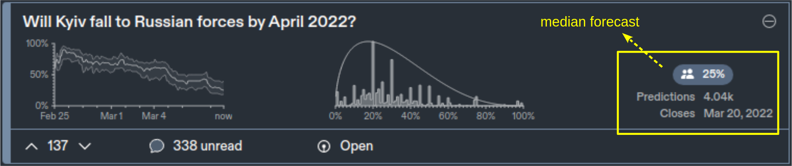

Extracting the collective wisdom in probabilistic judgments
Cem Peker
Tinbergen Institute, Erasmus University Rotterdam
Collective wisdom?
An event from Metaculus.com (a community forecasting platform)
Individuals disagree, how should we combine judgments?
Collective wisdom?
An event from Metaculus.com (a community forecasting platform)
Individuals disagree, how should we combine judgments?
Collective wisdom?
An event from Metaculus.com (a community forecasting platform)

Individuals disagree, how should we combine judgments?
Collective wisdom?
An event from Metaculus.com (a community forecasting platform)
Individuals disagree, how should we combine judgments?
Collective wisdom?
An event from Metaculus.com (a community forecasting platform)
Individuals disagree, how should we combine judgments?
Individuals disagree, how should we combine judgments?
Simple averaging is hard to beat (Clemen, 1989; Soll, 2009)

Can average probability be miscalibrated?
Can average probability be miscalibrated?
Example: Subprime mortgage crisis (2008-2010)
Mortgage-backed securities considered safe by most
Analysts collectively underestimated risks
A robust aggregation method?
This paper develops the Surprising Overshoot (SO) algorithm.
Elicits and uses meta-beliefs
Prelec et al. (2017), Palley and Soll (2019), Palley and Satopaa (2020), Wilkening et al. (2021)
Meta-belief example:
What is the probability that Russia invades Ukraine before 2023?
(prediction)
What is the average probability estimated by the other experts?
(meta-prediction)
Relationship between predictions and meta-predictions
Evidence from three experimental studies
The SO algorithm...
...consistently outperforms average prediction.
...improves over existing aggregation algorithms.
Palley and Soll (2019), Palley and Satopaa (2020), Martinie et al. (2020)
The SO estimator
Bayesian setup (Palley and Soll, 2019; Palley and Satopaa, 2020)
Binary event, $\theta$: prob. of occurrence
$N$ experts, Common prior on $\theta$
Each expert receives iid unbiased signal $t_i$ $(\theta \, \pm \text{error})$
prediction: $x_i = E\left[\theta | t_i\right]$
meta-prediction: $z_i = E\left[ \frac{1}{N-1} \sum\limits_{j \neq i} x_j \, \middle\vert \, t_i \right] $
"Linear aggregation problem" example (Palley and Soll, 2019)
$Y \in \{0,1\}$: outcome of the event, $\theta = P(Y=1)$
Common prior on $\theta$: $Beta(m s, m(1-s))$
$t_i$: average of $\ell$ independent realizations of $Y$
Posterior belief: $Beta(ms + \ell t_i, m(1-s) + \ell(1-t_i))$ with $$E[\theta | s,t_i] = \frac{m}{m+\ell} s + \frac{\ell}{m+\ell} t_i$$
Let $\omega = \ell/(m+\ell) \,$ and $\, E[\theta | s,t_i] = (1-\omega) \, s + \omega \, t_i$
For $N \to \infty$...
$z_i < \bar{x} \iff x_i < \theta$
Why? Correlation between prediction and meta-prediction
Both $x_i$ and $z_i$ depend on signal $t_i$
For $N \to \infty$...
$z_i < \bar{x} \iff x_i < \theta$
SO estimator:
1. Calculate Q = % of {meta-prediction < avg. prediction}
2. Locate quantile Q of sample predictions $\to$ converges to $\theta$
For $N \to \infty$...
$z_i < \bar{x} \iff x_i < \theta$
When $\bar{x} = \theta$, {Percentage of $z_i < \bar{x}$} $= $ {Percentage of $x_i < \bar{x}$}
When $\bar{x} \neq \theta$, {Percentage of $z_i < \bar{x}$} $\neq $ {Percentage of $x_i < \bar{x}$}
Inequality $\to$ "Overshoot surprise"
SO estimator
Improvement in accuracy when...
1. $N$ is not very small.
2. High disagreement among experts (difficult questions).
SO estimator
1. $N$ is not very small.
Evidence using Study 1 from Palley and Soll (2019).
Subjects guess Prob(Heads) of biased two-sided coins.
Signal $\equiv$ sample flips from the coin
1. $N$ is not very small.
Evidence using Study 1 from Palley and Soll (2019).
Subjects guess Prob(Heads) of a biased two-sided coin.
48 coins, 685 subjects
1. $N$ is not very small.
Average accuracy of aggregate forecasts as $N$ increases
Higher relative accuracy for in moderate to large samples.

Minimal Pivoting (Palley and Soll, 2019), Knowledge Weighting (Palley and Satopaa, 2020), Meta-Probability Weighting (Martinie et al., 2020)
1. $N$ is not very small.
Average accuracy of aggregate forecasts as $N$ increases
SO estimator has the lowest error in moderate to large samples.

Minimal Pivoting (Palley and Soll, 2019), Knowledge Weighting (Palley and Satopaa, 2020), Meta-Probability Weighting (Martinie et al., 2020)
Why does the SO algorithm work?
Positive (Negative) bias in $\bar{x} \to \bar{x}$ should be higher (lower) than the SO estimate
SO estimator
Higher improvement in accuracy when...
1. $N$ is not very small. ✓
2. High disagreement among experts.
2. High disagreement among experts.
Evidence using data from Wilkening et al. (2021)
"General Knowledge"
"Herbivores eat both plants and animals" (True or False?)
"State Capital"
"Los Angeles is the capital city of California" (True or False?)
- What is the probability that the statement is true?
- What is the average probability estimated by the others?
500 questions, 459 subjects
50 questions, 89 subjects
2. High disagreement among experts.
Analysis: 1. Categorize questions (according to disagreement, 3 levels)
2. Construct 95% Bootstrap intervals for SO vs alternative

More accurate than alternatives in high-disagreement questions.
2. High disagreement among experts.
Analysis: 1. Categorize questions (according to disagreement, 3 levels)
2. Construct 95% Bootstrap intervals for SO vs alternative

More accurate than alternatives in high-disagreement questions.
2. High disagreement among experts.

Dashed lines: 30% and 50% quantiles.
SO estimator picks a quantile other than average prediction
More disagreement $\to$ Larger difference btw. quantiles $\to$ SO more effective
SO estimator
Higher improvement in accuracy when...
1. $N$ is not very small. ✓
2. High disagreement among experts. ✓
★ Effective in moderate to large samples & difficult questions.
Questions?